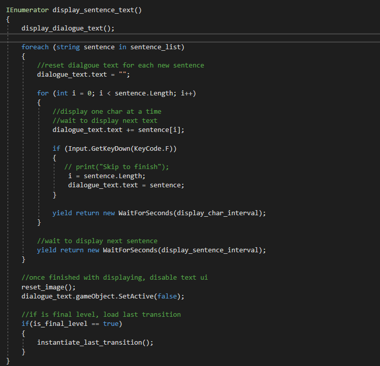
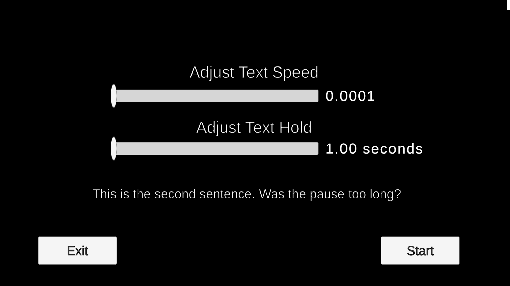
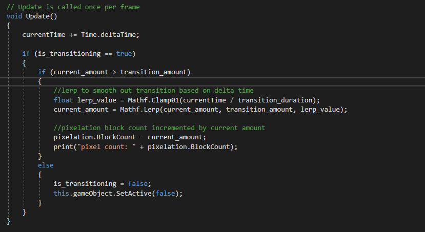
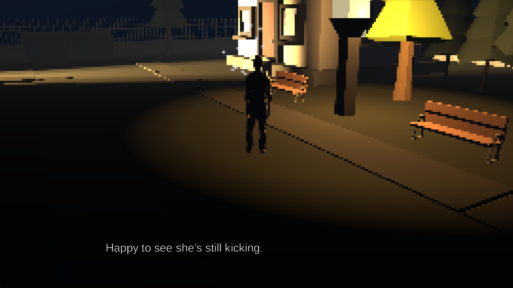
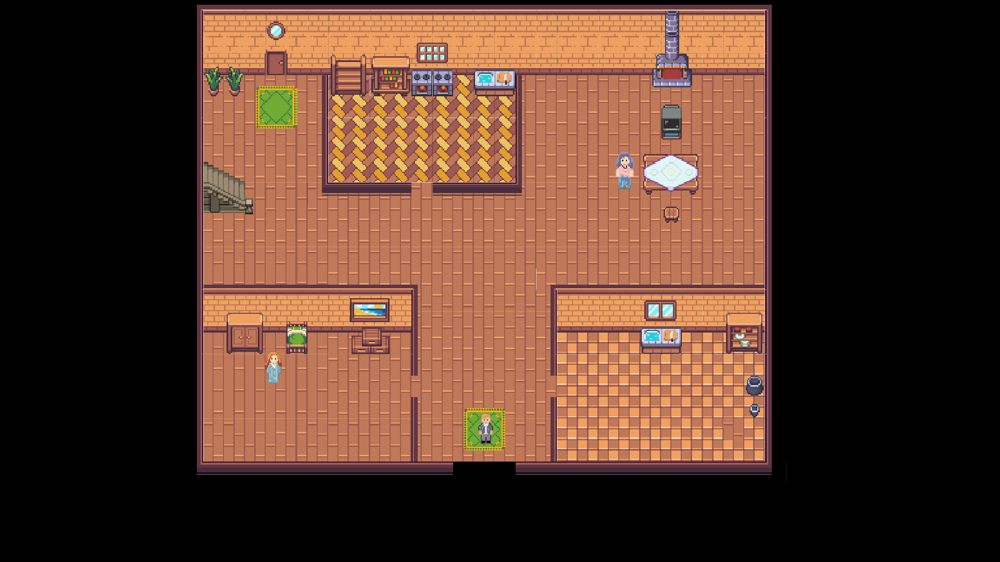

A 3d/2d game experience. After a sad day, Noah walks back home, recollecting memories and reminiscing about the good old days.
Take a walk back along with him on this interactive experience. A love letter to games, childhood, and life. The game uses narrative and
an interesting twist on graphics to help evoke a nostalgic feeling.
Goal
I wanted to be in charge of narrative design and writing in this game. I coded the dialogue system and interactable triggers that play out dialogue for the story.
My main priority was to write a narrative that parallels the journey back home and elicit a nostalgic feeling through memories.
Development
Trip by 8-bit* was a collaborative class project designed to evoke nostalgia through a unique blend of 3D and 2D visuals, introspective storytelling,
and minimalist gameplay. As the narrative designer and one of the programmers, my role was to create systems that supported the game’s emotional core
while ensuring a smooth and engaging player experience. The development process was filled with technical challenges, particularly in implementing
the dialogue system and dynamic pixelation effect
Programming the Dialogue System and Text System
Since the game is a walking simulator, the narrative is delivered through dialogue triggered by the player’s interactions with objects in the environment.
To achieve this, I designed a dialogue system that uses an array of strings to store and display text. Dialogue is stored in invisible game objects
that are scattered throughout the levels, each having a trigger collision that interacts with the player’s hitbox.
I wanted the dialogue to feel natural and immersive, so I implemented a scrolling text effect where characters appear one at a time.
To achieve this, I used an IEnumerator coroutine in Unity. The coroutine processes the current string, displaying each character with a small delay based on a
`textSpeed` variable. This created the illusion of text being typed out in real-time.

During playtesting, some players found the default text speed either too fast or too slow. To address this, I added a
text settings menu at the start of the game. This menu included sliders for adjusting `textSpeed` (the delay between characters) and `textHold`
(the delay before moving to the next line). These sliders modified public variables in the Dialogue Manager, which were then used in the coroutine to
control the scrolling speed dynamically.
This system allowed players to tailor the dialogue experience to their preferences, improving accessibility and overall satisfaction.

Dynamic Pixelation Effect
One of the game’s core visual features is the transition from 3D to 2D, symbolizing the protagonist’s journey back to simpler times.
Another programmer on the team had already implemented a screen pixelation effect using a library, which allowed us to adjust the pixelation level via a float variable.
To create a seamless transition, I wrote a script that used invisible triggers placed throughout the 3D maps. When the player’s hitbox collided with a trigger,
the pixelation level would incrementally increase. The triggers are similar to the dialogue triggers as they are invisble game objects with a trigger collisions.
This gradual change ensured the transition felt natural and aligned with the narrative’s emotional arc.

Playtesting revealed that the pixelation effect needed fine-tuning to feel just right. If the increments were too large, the transition felt jarring;
if they were too small, the effect was barely noticeable. I spent time adjusting the `incrementAmount` variable and testing the game repeatedly to ensure the pixelation
increased smoothly and meaningfully over time.
Designing the Narrative and Environment
While programming was a significant focus, the narrative and environment design were equally important in creating a nostalgic experience.
The game is divided into four maps, each representing a different stage of the protagonist’s journey:
The City: A 3D environment where the protagonist reflects on his family’s time in the city.
The Hometown: A transitional map where the pixelation effect begins, symbolizing the shift to simpler times.
The House (First Floor): A fully pixelated 2D environment, evoking a sense of familiarity and nostalgia.
The House (Upstairs): The final map, where the protagonist discovers his father’s old game console, culminating in a heartfelt reflection on childhood memories.


To guide players through these maps, I placed clusters of white particles at key locations, such as a restaurant or park equipment.
These particles served as visual cues, drawing the player’s attention to interactable objects that triggered introspective thoughts. Sometimes,
these thoughts were accompanied by low-resolution pictures, further enhancing the nostalgic atmosphere.
Playtesting and Iteration
Playtesting was crucial to refining the game’s systems and ensuring they aligned with the narrative vision. For example:
- The dialogue system was adjusted to accommodate different reading speeds, improving accessibility.
- The pixelation effect was fine-tuned to ensure it felt gradual and meaningful.
- The placement of particle clusters and triggers was optimized to guide players naturally through the environment.